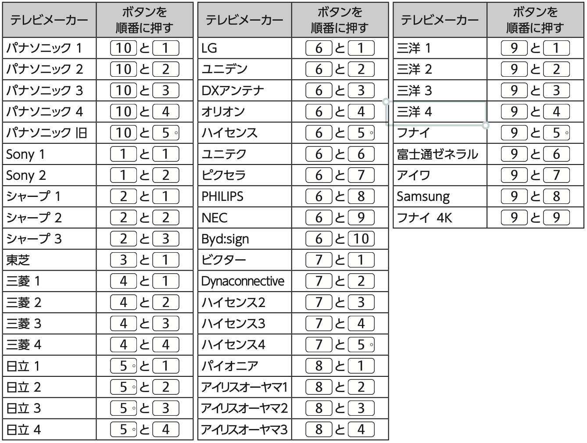

CATVデジタルセットトップボックス
設定＆操作マニュアル
Android TV搭載モデル ／ 設置現場・保守作業用
概要および設置前の確認事項
1. 設置環境と安全上のご注意
本機を安全かつ安定して動作させるため、設置時に以下の点をご確認ください。
- 横置きの徹底： 必ず「横置き（セット脚を下）」で設置してください。縦置きは放熱不良の原因となるため禁止です。
- 放熱スペース： 放熱のため、本体の周囲（左右・天面・背面）には10cm以上の間隔を空けてください。
- 設置場所： 直射日光が当たる場所や暖房器具の近く、通気口（底面・背面）をふさぐ場所には設置しないでください。
- 電源配線： 電源は付属の専用ACアダプターを使用し、電源コードに無理な力がかからないように配線してください。
- C-CASカード： C-CASカードは、矢印面を下（ICチップ面が上）にして確実に奥まで挿入してください。
2. 基本的なリモコン操作・画面の見方
設定作業は主にリモコンの「十字キー（▲▼◀▶）」と「決定」ボタンで行います。
- 「テレビメニュー」ボタン： CATV独自の放送一覧や各種設定、録画一覧メニューを開きます。
- 「ホーム（Android TV）」ボタン： Android TVのホーム画面を開きます。
- 「戻る」ボタン： 1つ前の画面やメニューに戻ります。
基本設置・初期設定（必須5項目）
1. リモコンのテレビメーカー設定
本機付属のリモコンで、接続先テレビの基本操作（電源入切、入力切換、音量調整）ができるよう設定します。
【設定手順】
- リモコン右上の「テレビ電源」ボタンを押したままにします。
- 「テレビ電源」を押したままの状態で、下表の対象メーカーに対応する2つの「数字ボタン」を順番に押します。
- 数字ボタンを押し終わったら、「テレビ電源」ボタンから指を離します。
- テレビに向けてリモコンの「テレビ電源」「音量」「入力切換」を押し、正常に動作するか確認します。
※設定例（パナソニック2）： 「テレビ電源」を押したまま「10」を押し、続けて「2」を押して指を離す。
【テレビメーカー設定コード一覧】

※工場出荷時は「パナソニック 1」に設定されています。動作しない場合は順にお試しください。
2. チャンネルおよび地域設定
【手順A：地域設定（郵便番号・県域）】
- 「設定」＞「本体設定」＞「デバイス設定」を開きます。
- 「放送・システム」列の「設置設定」を選び、「決定」を押します。
- 「地域設定」を選び、「郵便番号」を選択して「決定」を押します。
- リモコンの数字ボタンで設置場所の「郵便番号（7桁）」を入力します。
- 「県域設定」を選び、お住まいの都道府県を選択します（自動判別あり）。
【手順B：地上デジタルの初期スキャン】
- 「設置設定」内の「チャンネル設定」＞「地上デジタル」＞「初期スキャン」を選びます。
- お住まいの地域を選び、「地上デジタル受信方式」を選択してスキャンを開始します。
- 完了後「チャンネル入換」画面が表示されたら「決定」を押して終了します。
3. HDMIでの本機とテレビの連動設定（HDMI CEC）
- 「設定」＞「本体設定」＞「デバイス設定」を開きます。
- 「機器設定」列の「HDMI設定」を選びます。
- 「HDMI機器制御」を「オン」にします。
- 「電源オフ連動」を「オン」にします。
【注意】テレビ側でもHDMI連動機能（ビエラリンク等）を有効にする必要があります。必ずハイスピード規格準拠のHDMIケーブルをご使用ください。
4. ネットワーク関連の設定（有線LAN / Wi-Fi）
【有線LAN接続の場合（推奨）】
- 本機背面のLAN端子とルーターをLANケーブル（カテゴリ5e以上）で接続します。
- 「設定」＞「本体設定」＞「ネットワークとインターネット」を選びます。
- 「IP設定」を選び「DHCP（自動取得）」を選択します。
- 前面の「ネットランプ」が緑色点灯することを確認します。
5. 外付けUSBハードディスク（録画用HDD）の設定
- USBケーブルを本機「背面」のUSB 3.0端子に接続します（前面は非対応）。
- HDDの電源を入れます。
- 画面に登録確認が出たら、指示に従い「機器登録」および「初期化」を実行します。
- 「デフォルト録画先」として登録されているか確認します。
運用・保守における重要注意事項および便利機能
1. 最初のテレビ視聴画面の表示方法（OS起動時画面設定）
お客様が電源を入れた際にすぐにテレビ放送が見られるように設定します。
［設定］＞［本体設定］＞［デバイス設定］＞［放送・システム］＞［設置設定］＞［OS起動時の表示画面］
- 「テレビ番組視聴」： 電源ONで直接テレビ放送が表示されます（推奨）。
- 「テレビメニュー」： CATVのメニュー画面が表示されます（工場出荷時）。
2. 番組の録画手順
- 即時録画： 視聴中にリモコンの「録画（●）」ボタンを押します。
- 2番組同時録画： 1番組録画中にもう1番組を選局し、「録画」を押します。
- 予約録画： 「番組表」ボタンから番組を選び「録画予約」を選びます。
3. LANダビング・4. リモコンのBluetooth再登録
- LANダビング： 録画番組一覧よりダビングしたい番組を選び「ダビング」を実行。
- リモコン再登録： 本体背面「ペアリング」を3秒長押し後、リモコンの「スタート」＋「d」ボタンを同時に3秒以上長押しします。
5. 本機前面ランプの状態一覧（トラブルシューティング）
| ランプ |
状態 |
意味と処置 |
| 電源 |
緑・点滅 |
電源ON処理中（起動中）。完了まで待機。 |
| 橙・点灯 |
スタンバイ状態（EPG受信中など）。正常。 |
| ネット |
消灯 |
LAN未接続またはネット切断。結線と設定を確認。 |
| 録画 |
赤・点灯 |
USB HDDへの録画実行中。正常。 |
| 状態 |
緑・点滅 |
リモコン未ペアリング。再登録を実施。 |
| 赤・点灯 |
未契約状態。C-CASカードの挿入向き・契約を確認。 |
| 赤・点滅 |
セキュリティ異常。CATV局センターへ連絡。 |
設置完了確認チェックシート（現場引渡用）
すべての設置・設定が完了したら、以下の項目を順に確認し、お客様へお引き渡しください。
| No. |
確認内容 |
判定 |
| 1 |
【外観・設置】水平で通気口が塞がれておらず、周囲に10cm以上の間隔がある |
□ OK |
| 2 |
【カード】C-CASカードが矢印面を下にして確実に奥まで挿入されている |
□ OK |
| 3 |
【映像・音声】HDMI接続でテレビ画面にクリアな映像と音声が出力されている |
□ OK |
| 4 |
【受信】スキャンが完了し、地デジ・CATVの全チャンネルが正常に選局できる |
□ OK |
| 5 |
【連動】STBリモコンでテレビの「電源・音量・入力切換」が操作できる |
□ OK |
| 6 |
【通信】ネットランプが緑点灯し、YouTube等のネット通信が可能である |
□ OK |
| 7 |
【録画】USB HDDが認識され、即時録画・番組表予約ができる |
□ OK |
| 8 |
【起動画面】電源ON時に希望する画面（テレビ番組視聴等）が表示される |
□ OK |
【現場メモ・特記事項】